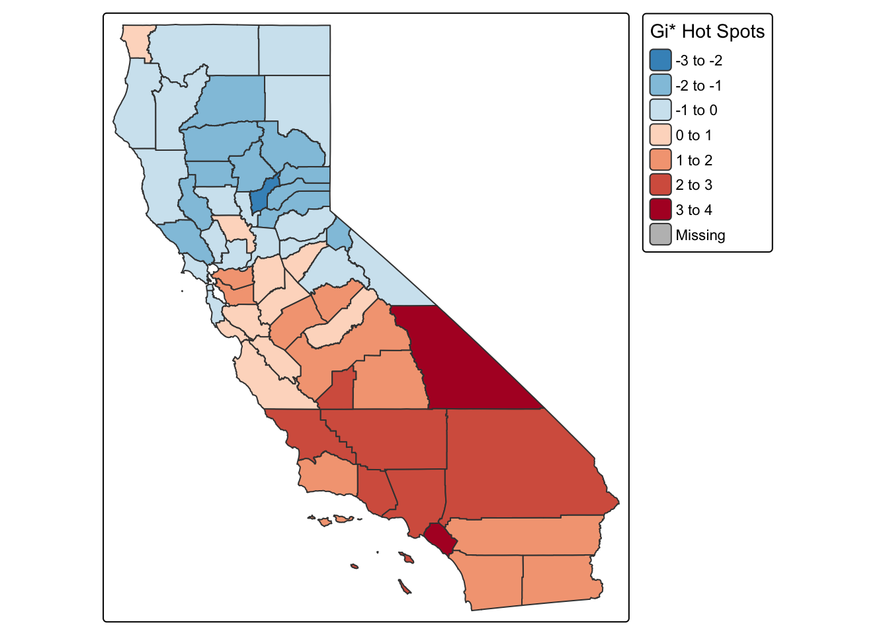

Welcome to your crash course in spatial statistics for public health! We’re going to unravel patterns in space like map-based detectives — think Sherlock Holmes meets epidemiology. We’ll explore mapping, clustering, and how relationships between variables vary across geography. Buckle up!
As always, we need to load our packages. We have a couple of new friends joining us this week.
spdep: This package handles spatial
dependence — creating neighborhood structures and calculating statistics
like Moran’s I and Local Indicators of Spatial Association (LISA). Think
of it as your go-to for spatial autocorrelation.GWmodel: A robust package for running
Geographically Weighted Regression (GWR), including model diagnostics,
bandwidth selection, and mapping local coefficients. It’s the main
engine behind spatially varying relationships.spgwr: A lighter package also used for
GWR. In this tutorial, we use it mainly for its convenient
gwr.sel() function to find the best adaptive bandwidth via
cross-validation.Together, these packages help us detect patterns, clusters, and relationships that change across space — essential for spatial public health analysis.
First, we need data. We’ll grab county-level diabetes prevalence for 2021 from the CDC and merge it with county geometries and median household income from the American Community Survey 2021. For the diabetes data, I downloaded this from the CDC US Diabetes Surveillance System. It comes in a little ugly, so we will have to clean up the column names, reformat the FIPS codes, and filter to just California counties.
# Load and clean CDC diabetes CSV
diab_raw <- read_csv("/Users/pjames1/Dropbox/UC Davis Folders/SPH 215 GIS and Public Health/Github_Website/SPH215/DiabetesAtlas_CountyData.csv", skip = 2) |>
slice(1:(n() - 1)) # remove last row
# Clean column names
names(diab_raw) <- str_trim(names(diab_raw))
# Format FIPS codes with leading zeros
diab_raw <- diab_raw |>
mutate(CountyFIPS = str_pad(as.character(as.integer(CountyFIPS)), 5, pad = "0"))
# Filter for California counties only
ca_diabetes <- diab_raw |>
filter(str_starts(CountyFIPS, "06")) |>
mutate(Percentage = as.numeric(Percentage)) |>
select(FIPS = CountyFIPS, County, Diabetes = Percentage)
Now lets get our good ole median income data from the US Census. Because it’s 2021 Diabetes data, we will pull the 2017-2021 five year estimates from the ACS.
# Download median income and geometries for California counties
ca_geo <- get_acs(
geography = "county",
variables = c(income = "B19013_001"), # Median household income
state = "CA",
geometry = TRUE,
year = 2021
) %>%
rename(income = estimate) %>%
select(GEOID, NAME, income, geometry)## | | | 0% | | | 1% | |= | 1% | |= | 2% | |== | 2% | |== | 3% | |=== | 4% | |=== | 5% | |==== | 5% | |==== | 6% | |===== | 6% | |===== | 7% | |===== | 8% | |====== | 8% | |====== | 9% | |======= | 9% | |======= | 10% | |======= | 11% | |======== | 11% | |======== | 12% | |========= | 12% | |========= | 13% | |========= | 14% | |========== | 14% | |========== | 15% | |=========== | 15% | |=========== | 16% | |============ | 16% | |============ | 17% | |============ | 18% | |============= | 18% | |============= | 19% | |============== | 19% | |============== | 20% | |============== | 21% | |=============== | 21% | |=============== | 22% | |================ | 22% | |================ | 23% | |================ | 24% | |================= | 24% | |================= | 25% | |================== | 25% | |================== | 26% | |=================== | 27% | |=================== | 28% | |==================== | 28% | |==================== | 29% | |===================== | 29% | |===================== | 30% | |===================== | 31% | |====================== | 31% | |====================== | 32% | |======================= | 32% | |======================= | 33% | |======================== | 34% | |======================== | 35% | |========================= | 35% | |========================= | 36% | |========================== | 37% | |========================== | 38% | |=========================== | 38% | |=========================== | 39% | |============================ | 39% | |============================ | 40% | |============================ | 41% | |============================= | 41% | |============================= | 42% | |============================== | 42% | |============================== | 43% | |=============================== | 44% | |=============================== | 45% | |================================ | 45% | |================================ | 46% | |================================= | 46% | |================================= | 47% | |================================= | 48% | |================================== | 48% | |================================== | 49% | |=================================== | 49% | |=================================== | 50% | |=================================== | 51% | |==================================== | 51% | |==================================== | 52% | |===================================== | 52% | |===================================== | 53% | |===================================== | 54% | |====================================== | 54% | |====================================== | 55% | |======================================= | 55% | |======================================= | 56% | |======================================== | 57% | |======================================== | 58% | |========================================= | 58% | |========================================= | 59% | |========================================== | 59% | |========================================== | 60% | |========================================== | 61% | |=========================================== | 61% | |=========================================== | 62% | |============================================ | 62% | |============================================ | 63% | |============================================ | 64% | |============================================= | 64% | |============================================= | 65% | |============================================== | 65% | |============================================== | 66% | |=============================================== | 67% | |=============================================== | 68% | |================================================ | 68% | |================================================ | 69% | |================================================= | 69% | |================================================= | 70% | |================================================= | 71% | |================================================== | 71% | |================================================== | 72% | |=================================================== | 72% | |=================================================== | 73% | |==================================================== | 74% | |==================================================== | 75% | |===================================================== | 75% | |===================================================== | 76% | |====================================================== | 77% | |====================================================== | 78% | |======================================================= | 78% | |======================================================= | 79% | |======================================================== | 79% | |======================================================== | 80% | |======================================================== | 81% | |========================================================= | 81% | |========================================================= | 82% | |========================================================== | 82% | |========================================================== | 83% | |=========================================================== | 84% | |=========================================================== | 85% | |============================================================ | 85% | |============================================================ | 86% | |============================================================= | 86% | |============================================================= | 87% | |============================================================= | 88% | |============================================================== | 88% | |============================================================== | 89% | |=============================================================== | 89% | |=============================================================== | 90% | |=============================================================== | 91% | |================================================================ | 91% | |================================================================ | 92% | |================================================================= | 92% | |================================================================= | 93% | |================================================================= | 94% | |================================================================== | 94% | |================================================================== | 95% | |=================================================================== | 95% | |=================================================================== | 96% | |==================================================================== | 96% | |==================================================================== | 97% | |==================================================================== | 98% | |===================================================================== | 98% | |===================================================================== | 99% | |======================================================================| 99% | |======================================================================| 100%
Let’s make a map and see what diabetes prevalence looks like across counties in California.
# Merge diabetes and ACS income data
ca_data <- ca_geo |>
left_join(ca_diabetes, by = c("GEOID" = "FIPS"))
tmap_mode("plot")
cat("\n### County-Level Diabetes Prevalence in California\n")##
## ### County-Level Diabetes Prevalence in Californiatm_shape(ca_data) +
tm_polygons("Diabetes", palette = "Reds", style = "quantile",
title = "% Diagnosed Diabetes")
Now let’s ask: are diabetes rates clustered in space, or scattered randomly like confetti in a strong breeze? This is where spatial autocorrelation steps in. We’ll start with Moran’s I — the granddaddy of spatial pattern detection.
Moran’s I is a measure of overall spatial autocorrelation — that is, how similar or dissimilar values (like diabetes prevalence) are in nearby areas (i.e., in nearby counties).
Let’s calculate Moran’s I and find out if diabetes prevalence in California follows any spatial logic.
nb <- poly2nb(ca_data)
lw <- nb2listw(nb, style = "W")
moran.test(ca_data$Diabetes, lw)##
## Moran I test under randomisation
##
## data: ca_data$Diabetes
## weights: lw
##
## Moran I statistic standard deviate = 3.7581, p-value = 8.559e-05
## alternative hypothesis: greater
## sample estimates:
## Moran I statistic Expectation Variance
## 0.296544968 -0.017543860 0.006984903How to read this:
üëâ Bottom line: Diabetes rates aren‚Äôt randomly distributed across California. There are clusters of high and low values, and we‚Äôve got statistical proof! This result tells us that there is statistically significant spatial clustering of diabetes prevalence across California counties. Counties with high diabetes rates tend to be near other high-rate counties, and the same is true for low-rate counties. The Moran‚Äôs I value of ~0.30 indicates moderate positive spatial autocorrelation, and the tiny p-value confirms that this pattern is not due to chance.
While Moran’s I tells us whether there’s spatial autocorrelation in general, LISA zooms in and tells us where it’s happening.
LISA stands for Local Indicators of Spatial Association, and it helps us detect: - High-High clusters: High diabetes rates surrounded by other high-rate counties (hot clusters). - Low-Low clusters: Healthy zones with low diabetes prevalence. - High-Low or Low-High outliers: Counties that buck the trend — like a donut hole in a cake.
Mapping LISA helps target interventions more precisely, and explain those spatial oddballs.
local_moran <- localmoran(ca_data$Diabetes, lw)
ca_data$Ii <- local_moran[, "Ii"]
ca_data$Pval <- local_moran[, "Pr(z != E(Ii))"]
# Map LISA
cat("\n### Local Spatial Clustering of Diabetes\n")##
## ### Local Spatial Clustering of Diabetestm_shape(ca_data) +
tm_polygons("Ii", style = "quantile", palette = "PuOr", title = "Local Moran's I")
This map shows where spatial clustering of diabetes is strongest — not just overall, but locally. Here’s how to read it:
üëâ In practice: Counties with strong clustering (dark purple) may benefit from regional strategies, while outliers may need more localized investigation. This helps tailor public health interventions to spatial realities.
Now we spice things up with the Getis-Ord Gi* statistic — pronounced “gee-star.” This method identifies statistically significant hot and cold spots in the data.
Gi* doesn’t just look at one value — it considers the neighborhood around it too. This is powerful for public health mapping, especially when prioritizing interventions or allocating resources. hot and cold spots — areas with significantly higher or lower rates than expected.
gi_star <- localG(ca_data$Diabetes, lw)
ca_data$Gi_star <- as.numeric(gi_star)
cat("\n### Hot and Cold Spots of Diabetes\n")##
## ### Hot and Cold Spots of Diabetestm_shape(ca_data) +
tm_polygons("Gi_star", palette = "RdBu", style = "pretty", title = "Gi* Hot Spots")
This map uses the Getis-Ord Gi* statistic to highlight statistically significant spatial clusters of diabetes — also known as hot and cold spots:
üëâ In practice: The blue-hot lower half of the state (e.g., San Bernardino, Imperial, Tulare) may benefit from coordinated, regional interventions, while red-cold northern counties may offer models of prevention or service delivery worth emulating.
Ready for some spatial wizardry? GWR — Geographically Weighted Regression — is like regular regression but with a magic twist: the coefficients can change depending on where you are.
Traditional regression assumes one-size-fits-all relationships. But in public health, the impact of income on diabetes may differ from San Francisco to Fresno.
GWR: - Fits a separate regression model–no more assuming one-size-fits-all models!
coords <- st_coordinates(st_centroid(ca_data))
ca_data$X <- coords[, 1]
ca_data$Y <- coords[, 2]
bw <- gwr.sel(Diabetes ~ income, data = ca_data, coords = coords, adapt = TRUE)## Adaptive q: 0.381966 CV score: 64.59459
## Adaptive q: 0.618034 CV score: 67.46468
## Adaptive q: 0.236068 CV score: 60.33242
## Adaptive q: 0.145898 CV score: 54.84612
## Adaptive q: 0.09016994 CV score: 51.36862
## Adaptive q: 0.05572809 CV score: 52.55573
## Adaptive q: 0.0889909 CV score: 51.25455
## Adaptive q: 0.07731792 CV score: 51.04182
## Adaptive q: 0.06907134 CV score: 51.67776
## Adaptive q: 0.08166285 CV score: 50.95911
## Adaptive q: 0.08136232 CV score: 50.96031
## Adaptive q: 0.08205407 CV score: 50.95845
## Adaptive q: 0.08210682 CV score: 50.95844
## Adaptive q: 0.08214751 CV score: 50.95844
## Adaptive q: 0.08210682 CV score: 50.95844# Run GWR using adaptive bandwidth
model <- gwr(Diabetes ~ income, data = ca_data, coords = coords,
adapt = bw, hatmatrix = TRUE)
ca_data$gwr_income <- model$SDF$incomeüìå INTERPRETATION: The output shows the model testing different ‚Äòadaptive q‚Äô values, which represent the proportion of neighboring counties used in each local model. It chooses the q value with the lowest cross-validation (CV) score ‚Äî best predictive fit. For example: q = 0.082 means ~8% of counties (‚âà5 counties) are used in each local regression. Lower CV = better model. It‚Äôs finding the ‚Äòjust right‚Äô neighborhood size for each regression.
Let’s map those locally varying regression coefficients and see where income matters more (or less) for diabetes.
tm_shape(ca_data) +
tm_polygons("gwr_income", palette = "RdYlGn", style = "quantile", title = "GWR: Income Effect")
This map shows how the relationship between income and diabetes varies across California — it’s a spatial view of the regression coefficient between income and diabetes.
All the values are negative, meaning higher income is associated with lower diabetes prevalence — but how strongly this is true varies across space.
Dark red counties (most negative values): These are the places where income has the strongest inverse relationship with diabetes. In other words, improving economic conditions here could have a big public health payoff.
Lighter yellow to green counties: These areas still show a negative relationship, but it’s weaker. That might mean other social or environmental factors are playing a bigger role in these counties.
Dark green areas: The weakest negative associations — here, income might matter less for diabetes prevention, or other factors dominate.
üëâ In practice: This map helps public health professionals tailor interventions. In counties where income is a strong driver of diabetes, economic support programs might reduce prevalence. In others, different strategies may be needed.
Boom! You just crunched real public health data using cutting-edge spatial tools. From maps to models, you’ve uncovered spatial inequalities in health. Go forth and map responsibly!